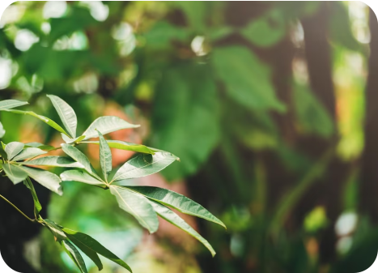
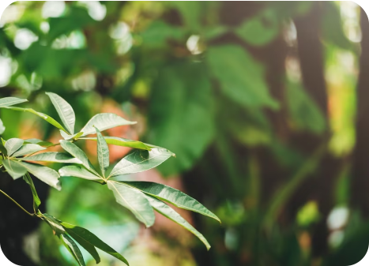

Para o aprendizado ser ainda melhor disponibilizamos vídeos e um jogo da forca que você pode jogar assim que ver os conteúdos!
Você já se perguntou como os animais vivem na natureza e o que eles fazem? Se você tem curiosidade de saber como funciona o reino animal e todo o seu processo além de saber a definição de cada espécie, basta acessar nosso jogo com direito a essas informações além de um podcast para crianças com deficiência visual.


Produtores são o primeiro nível trófico observado em uma cadeia alimenta, e não precisam se alimentar de outros organismos, pois fabricam o seu próprio alimento através da fotossíntese, ou seja, são seres autótrofos.
Os consumidores são os seres heterótrofos, ou seja, não produzem o seu próprio alimento e por isso necessitam buscar em outros seres a energia para sobreviver. Os consumidores primários são representados pelos herbívoros, eles alimentam-se dos seres produtores. Enquanto isso, os consumidores secundários são representados pelos carnívoros, esses se alimentam dos consumidores primários. Já os consumidores terciários são representados pelos carnívoros de grande porte e predadores. É importante lembrar que nesse nível trófico estão os chamados detritívoros, os animais que se alimentam de restos orgânicos. São exemplos os abutres, minhocas, urubus, moscas. Entretanto, é importante destacar que as cadeias tendem a não ser muito grandes, sendo geralmente observadas cinco ou menos ligações. Entre as hipóteses que explicam por que as cadeias não se estendem muito está a hipótese energética, que sugere que o tamanho é limitado devido à baixa eficiência na transferência de energia.

Os seres decompositores são heterótrofos importantes para o ciclo da cadeia alimentar, degradam a matéria orgânica. Ao degradar a matéria orgânica, esses organismos liberam nutrientes que podem ser reutilizados, atuando, portanto, na ciclagem de nutrientes Nesse processo, transformam a matéria orgânica em inorgânica, que será utilizada pelos produtores, recomeçando o ciclo.
texto texto texto texto texto texto texto texto texto texto texto texto texto texto texto texto texto texto texto texto texto
texto texto texto texto texto texto texto texto texto texto texto texto texto texto texto texto texto texto texto texto texto
 

Autótrofos são os seres vivos que produzem o seu próprio alimento, obtêm nutrientes e energia, aproveitando a luz solar, através da fotossíntese, ou seja, são capazes de sintetizar compostos orgânicos a partir de compostos inorgânicos através de fotossíntese ou quimiossíntese.
Heterótrofos são os seres vivos que não são capazes de produzir o seu próprio alimento e por isso necessitam ingerir ou absorver moléculas orgânicas pré-formadas de outros seres vivos, para obtenção de energia e síntese das biomoléculas de que necessitam.
A chamada teia alimentar é um conjunto de cadeias alimentares, porque já que existem animais que possuem uma alimentação diversificada, ou seja, um mesmo organismo pode ocupar diferentes níveis tróficos, em diferentes cadeias alimentares. Uma única espécie pode contemplar diferentes papéis em cadeias alimentares distintas.
A cadeia alimentar representa uma sequência de seres vivos na qual um organismo serve de alimento para o outro. Nela, ocorre a transferência de matéria e energia no ecossistema. As cadeias alimentares são constituídas por diversos organismos, que ocupam diferentes posições ou níveis tróficos, de acordo com a forma como se alimentam.
A teia alimentar representa um fluxo multidirecional, diferentemente da cadeia, que segue um fluxo unidirecional. Ela permite a passagem da matéria e da energia pelos ecossistemas. Enquanto isso a cadeia alimentar o animal ocupa somente um nível trófico enquanto a teia pode ocupar diferentes níveis tróficos.